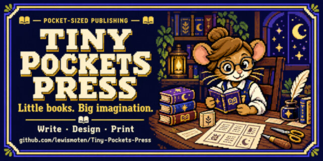

Tiny Pockets Press
Miniature publishing

A modular JavaScript editor for miniature books, with page layout, imposition logic, and separate interior and cover print and PDF views.
Executive summary
Why it exists
A miniature book has to be laid out so that its pages, folded and cut, come out in the right order. That is an imposition problem, and it is easy to get wrong by hand.
Outcome
A live editor on GitHub Pages that runs locally with one command.
My role
Author and maintainer.
Technical overview
How it works
A browser editor for miniature books, split into small JavaScript modules: configuration, state, Markdown and media handling, a layout engine, page rendering, imposition, a library, the editor, export, and the app shell. It keeps interior and cover as separate print and PDF views, and includes a sample book as data.
Hard parts
Version 6.1 is a syntax-corrected build of version 6. I rebuilt the JavaScript modules to remove invalid escaped strings and broken regular-expression literals, and added a node --check validation step to packaging so that cannot slip through again.